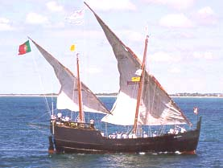
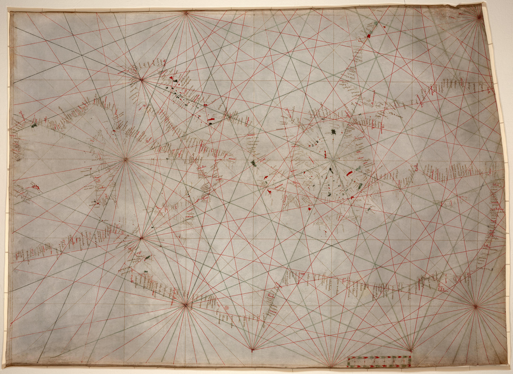
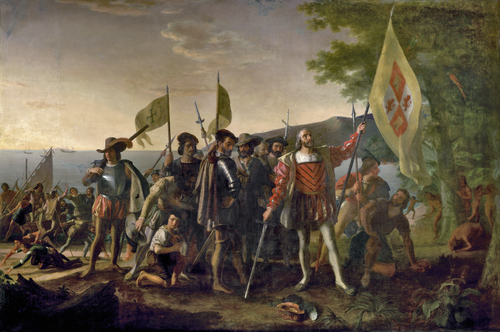
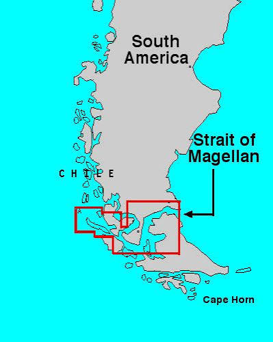
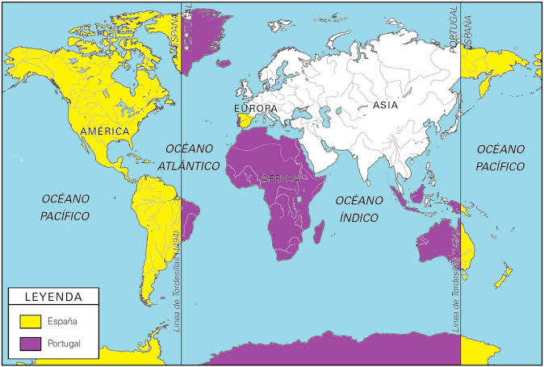
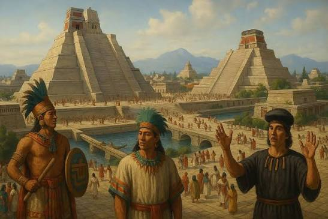
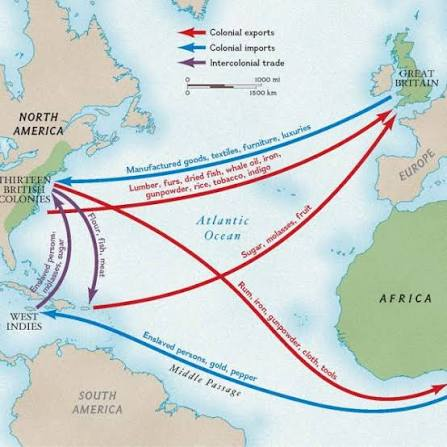

الاكتشافات الجغرافية الكبرى ونتائجها
مقدمة
عرفت الملاحة البحرية منذ منتصف القرن XV تطوّرات تقنية متلاحقة، فانطلقت عدّة رحلات استكشافية هدفها عبور بحر الظّلمات (المحيط الأطلسي). ولم يمض قرن من الزّمن، حتّى تمكّن الأوروبيون من العثور على أراضي جديدة واكتشاف طرق لم تكن معروفة من قبل. فانتقل بذلك مركز ثقل الملاحة البحرية من البحر المتوسّط إلى المحيط الأطلسي.
ما هي الظروف الملائمة لتنظيم الرحلات الاستكشافية؟ وما هي أهم هذه الرحلات؟ وما هي نتائجها؟
I الظروف الملائمة لتنظيم الرحلات
1. الدوافع
أ. البحث عن مسالك جديدة للوصول إلى الهند
بعد فترة انكماش طويلة، انتقل الاقتصاد الأوروبي منذ أواسط القرن XV إلى مرحلة الانتعاش. وتحسّن الوضع الصحي وزاد عدد سكّان أوروبا الغربية (29 بلدًا) من 57,268 مليون نسمة سنة 1500 إلى 73,778 مليون نسمة سنة 1600، فتنامى الطلب على المعادن النفيسة (الفضة والذهب والنحاس) والمواد الثمينة (مثل التوابل والسكّر والحرير). وقد ظلّت بلاد الهند (جنوب شرق آسيا) إلى جانب بلاد السودان (إفريقيا جنوب الصحراء) المصدر الرئيسي لهذه المواد. وكان المسلمون يحكمون السيطرة على التجارة وأسعارها ومسالكها بين أوروبا من جهة وآسيا وإفريقيا جنوب الصحراء من جهة أخرى، ويجنون من وراء ذلك أرباحًا طائلة على حساب تجار أوروبا. ومن ثمّة كان سعي الأوروبيين، وخاصّة منهم الإسبان والبرتغاليون، إلى البحث عن مسالك بحرية بديلة عن الطرقات المعهودة التي سيطر عليها المسلمون.
ب. رغبة الملوك في دعم قوة الدولة ومواردها
رأى ملوك أوروبا في الرحلات الاستكشافية والنتائج المرتقبة منها دعامة لعظمة دولهم بفضل ما ستوفّره من موارد إضافية وتوسيع لرقعة نفوذهم. ومن أشهر الملوك الذين شجّعوا الرحلات:
- الأمير البرتغالي هنري الملاح (Henri le Navigateur) (1394-1460): الذي تبنّى وموّل استكشاف سواحل غرب إفريقيا (دون المشاركة الفعلية في أيّ منها) بداية من 1420 (تاريخ استكشاف مدار مادير Madère) إلى غاية سنة 1456 (تاريخ بلوغ مصب نهر غمبيا على سواحل السنغال).
- فرديناند الثاني (Ferdinand II) ملك أرغونة (1452-1516) وزوجته إيزابيلا (Isabella) ملكة قشتالة (1451-1504): الملقّبان بالكاثوليكيين، واللذان رعيا رحلات المستكشف الإيطالي كريستوف كولومب وحركة التوسّع الإسباني، تتويجًا لمشروعهما المشترك في القضاء على المسلمين بعد أن أفلحا في استرجاع آخر ثغور الإسلام في الأندلس: غرناطة سنة 1492.
ج. نشر المسيحية
اعتبرت الكنيسة الرحلات وسيلة للتصدّي لتوسّع دولة الخلافة الإسلامية: الإمبراطورية العثمانية. كما رأت فيها وسيلة لتنصير الشعوب وتعزيز صفوف الأتباع وما يترتّب عن ذلك من زيادة عائداتها واسترجاعًا لثقة المسيحيين الأوروبيين بها بعد فشل الحملات الصليبية (1096-1270م). وقد شجّعت الكنيسة على تنظيم الرحلات الاستكشافية رغم تناقض الأسس العلمية المستندة إليها بعضها مع العلوم الكنسية (مثل مبدأ كروية الأرض).
1. العوامل المساعدة
أ. تطوّر تقنيات الملاحة البحرية
استفاد البرتغاليون والإسبان من التقنيات البحرية التي طوّرتها الشعوب الأخرى بما في ذلك العرب، ودعّموها بابتكاراتهم الخاصة. ومن مظاهر هذا التطوّر:
- تصميم سفينة الكرفال (Caravelle): وهي سفينة جديدة بناها البرتغاليون منذ أواسط القرن XV، وهي متوسّطة الطول ذات جوانب عالية لا تزيد حمولتها على 100 طن، سهلة القيادة والمناورة في أعالي البحار بفضل أشرعتها المثلثة والمربّعة الموزّعة على عدّة صواري (إلى غاية 4 صواري).
- إدخال تحسينات على البوصلة والاصطرلاب: البوصلة لمعرفة الاتجاه، والاصطرلاب لتحديد الموقع على خطوط العرض، ممّا أتاح التعرّف بدقّة على مواقع السفن وتحديد مساراتها بشكل أفضل.
- وضع المرشدات البحرية (Portulan): وهي خرائط جديدة تتطوّر مع كلّ رحلة، استدلّ بها الملّاحون لمعرفة الطرقات بفضل ما توفّره من معلومات حول السواحل والجزر والموانئ.
ب. رواج نظرية كروية الأرض
أحيى الأوروبيون نظريات الجغرافيين القدامى، ومن أهمّها نظرية كروية الأرض التي دعا إليها الإغريقي كلاوديوس بطليموس في القرن II م (عاش في الإسكندرية بمصر الرومانية بين عامي 90 و168 م). وقد أكّدها الجغرافي العربي أبو عبد الله بن محمد بن عبد الله بن إدريس (1100-1166م) حين رسم حوالي سنة 1156م خارطة للعالم في شكل كرة فضيّة بطلب من ملك صقلية روجيه الثاني (Roger II).
II أهمّ الرحلات
1. الرحلات البرتغالية
اتّجه الرحّالة البرتغاليون إلى المحيط الأطلسي بحثًا عن مصادر الثروة. وامتدّت رحلاتهم على مرحلتين:
- المرحلة الأولى (تمهيدية): تمكّن خلالها البرتغاليون من اكتشاف السواحل الغربية لإفريقيا في عهد هنري الملاح.
- المرحلة الثانية: تضمّنت رحلتين كبيرتين:
- رحلة برتلمي دياز (Bartolomeu Dias): الذي بلغ رأس الأعاصير (Cabo Tormentoso) الذي سُمّي لاحقًا رأس الرجاء الصالح في فيفري 1488، وأثبت بذلك اتّصال المحيطين الأطلسي والهندي.
- رحلة فاسكو دي غاما (Vasco de Gama): الذي نجح في بلوغ ميناء كلكوتا بالهند (مدينة Kozhikode حاليًا) في 20 ماي 1498 (أي بعد اكتشاف الإسبان للطريق إلى أمريكا من الغرب).
2. الرحلات الإسبانية
بعد أن استعاد الإسبان استقرار بلادهم السياسي، شرعوا في تنفيذ مشروعهم الرامي إلى بلوغ الهند (جنوب شرق آسيا) باتّباع مسلك يتّجه نحو الغرب.
أ. كريستوف كولومب ورحلاته الأربع
قاد كريستوف كولومب أربع رحلات متتالية بين 1492 و1504 أفضت إلى بلوغ أراضي اعتقد خطأً أنّها بلاد الهند، حيث أثبت الرحّالة الإيطالي أمريغو فاسبوتشي (Amérigo Vespucci) لاحقًا أنّها جزء من قارة جديدة سُميّت باسمه سنة 1507 فكانت أمريكا (América).
كريستوف كولومب: من مواليد جنوة، إحدى أبرز المدن المصارف الإيطالية والأوروبية، سنة 1451. خبر الملاحة في المتوسّط وبين آيسلندا وسواحل إفريقيا الغربية. استقرّ في لشبونة سنة 1476 حيث سبقه إليها شقيقه راسم الخرائط برتيليمي. تزوّج سنة 1479 من حاكمة جزيرة Porto Santo. عرض مشروعه بلوغ الهند من الغرب، بدايةً، على ملك البرتغال Jean II le Parfait سنة 1484 لكنّه رُفض بسبب أخطاء حسابية واستكمال البرتغال استعداداتها للدوران حول رأس الرجاء الصالح، بينما لقي الترحيب في إسبانيا — رغم تحفّظ البعض — حيث أبرم اتّفاقًا مع عاهلي إسبانيا يصبح بموجبه قائدًا لأسطول البحر المحيط (Amiral de la mer Océane) ونائب الملك على جميع الأراضي التي يكتشفها، فضلًا عن عُشر (10/1) جميع المعادن في الأراضي الواقعة تحت سيادته.
- الرحلة الأولى (3 أوت 1492 - جانفي 1493): انطلقت من ميناء بالوس (Palos) الإسباني على متن 3 سفن منها سانتا ماريا (Santa María) بقيادته، وبينتا (Pinta) ونينا (Niña). وفي صبيحة يوم 12 أكتوبر 1492 حطّت السفن رحالها بغواناهاني (Guanahaní) [ووفق أحدث الدراسات Samana Cay] إحدى جزر الباهاماس (Bahamas) معلنًا إيّاها أمام حشد من السكّان الأصليين ملكًا لإسبانيا وأطلق عليها اسم (San Salvador) أي القدّيس المنقذ. ومضى إلى استطلاع بقية الجزر فحلّ بكوبا (وسمّاها كولومب Juana نسبة إلى أميرة إسبانية) وLa Española التي تحوّلت لاحقًا إلى Hispaniola (وتضمّ اليوم جمهورية الدومينيكان وهايتي). وأقفل الشهر الموالي (جانفي 1493) عائدًا، مكتشفًا بذلك عالمًا جديدًا وأقصر الطرق الملاحية إليه.
- الرحلة الثانية (سبتمبر 1493 - أكتوبر 1495): وهي أكثر طموحًا من الأولى حيث ضمّت 17 مركبًا و1,500 بحّار، واستهدفت الدومينيكان والغوادلوب وأنتيغا. وفي Hispaniola أقام كولومب أوّل مستعمرة أوروبية في العالم الجديد (مستعمرة Isabella) في نوفمبر 1493. ثمّ أبحر بمحاذاة سواحل كوبا إلى غاية جزيرة الجامايك. واجه كولومب ترحيب الأهالي الهنود بعدوانية، فأرسل أسراه إلى إسبانيا لبيعهم كعبيد ممّا أثار امتعاض الملكة إيزابيلا التي قرّرت إعادة الأحياء منهم إلى موطنهم.
- الرحلة الثالثة (30 ماي 1498 - 23 أوت 1500): حطّ خلالها بجزيرة ترينيداد (Trinidad) تيمّنًا بـLa Sainte-Trinité، ولمح سواحل فنزويلا حاليًا قبل أن ينزل بمصبّ أبرز أنهارها L'Orénoque (أحد أطول أنهار أمريكا الجنوبية: 2,560 كلم)، ولاحظ كولومب في يومياته آنذاك أنّه اكتشف "عالمًا جديدًا" يجهله الأوروبيون ويوحي بجنّة أرضية. وفي 23 أوت 1500 حلّ الحاكم الجديد فرانشيسكو دي بوباديلا (Francesco De Bobadilla) وأوقف الشقيقين كولومب وأرسلهما إلى إسبانيا حيث تمّ العفو عنهما دون السماح لهما بالعودة إلى منصبهما.
- الرحلة الرابعة (ماي 1502 - جوان 1504): بعد أن توصّل فاسكو دي غاما إلى بلوغ الهند عبر الشرق، سمح عاهلا إسبانيا لكريستوف كولومب باستئناف رحلاته غربًا لبلوغ ذات الهدف دون الإذن له بالنزول في Hispaniola. وبعد صعوبات جمّة ظلّ كولومب يبحر بموازاة سواحل أمريكا الوسطى طيلة 6 أشهر بحثًا عن ممرّ نحو الغرب، فتعرّف على الهندوراس وأقام في جانفي 1503 مستوطنة ببنما قبل أن يقفل عائدًا سنة بعد طول انتظار. توفّي يوم 20 ماي 1506 في Valladolid.
ب. رحلة فرديناند دي ماجلان وأول دورة حول العالم
في سنة 1519 حاول الرحّالة البرتغالي فرديناند دي ماجلان (Ferdinand De Magellan) (1480-1521) العثور على طريق الهند من الغرب لصالح التاج الإسباني، فانطلق يوم 20 سبتمبر 1519 من ميناء Sanlúcar de Barrameda على متن 5 مراكب. واكتشف المضيق الذي يحمل اليوم اسمه (مضيق ماجلان بين جنوب القارة الأمريكية وقارة الأنتركتيكا) ثمّ المحيط الذي أطلق عليه اسم الباسيفيكي لهدوء مياهه يوم 28 نوفمبر 1520. وفي 8 مارس 1521 حلّ بجزيرة غوام (Guam) بأرخبيل الماريان، وبعد 10 أيام اكتشف الفلبين. وحلّ يوم 7 أفريل بجزيرة كيبو (Cebu) وسط الفلبين، لكنّه قُتل يوم 27 أفريل 1521 أثناء كمين نُصب له. وبعد حرق سفينة أخرى من الأسطول، تمكّن رفاق ماجلان بقيادة الملّاح الإسباني Juan Sebastián Elcano من إتمام رحلة الدوران حول الأرض حيث حلّت سفينة القيادة Victoria بميناء إشبيلية يوم 6 سبتمبر 1522، محقّقين بذلك أوّل دورة حول العالم، ممّا أثبت عمليًا الشكل الكروي للأرض.
3. الرحلات الأخرى
ما أن ظهرت خيرات المستعمرات البرتغالية والإسبانية حتّى أخذت بقيّة الأقطار الأوروبية ترسل بحّاريها نحو الجهات المكتشفة. فقد انطلقت محاولات التعرّف على السواحل الشمالية لقارة أمريكا والبحث عن ممرّ شمال الأطلسي نحو بلاد الهند، ومن أبرزها:
- رحلة الإيطالي المقيم ببريستول في إنقلترا جون كابوت (Jean Cabot) بين 1497 و1498.
- رحلة الأخوين البرتغاليين جسبار وميغال كورت ريال (Gaspar & Miguel Corte Real) اللذين عثرا على جزيرة غروينلاند (Groenland) الدنماركية اليوم والأرض الجديدة (Terre Neuve) الكندية اليوم بين 1500 و1502.
- رحلة الإنقليزي مارتن فروبيشار (Sir Martin Frobisher) (1535-1594) أوّل من شاهد قبائل الإسكيمو الكندية، وجون دايفيس (John Davis) (1550-1605) مستكشف سواحل غروينلاند شمالًا (1585) وجزر المالوين جنوبًا (1591).
وعلى الرغم من الأهمية التي اكتستها هذه الرحلات، فقد بقيت عدّة مناطق من العالم مجهولة، ممّا يفسّر تواصل الحملات الاستكشافية طيلة القرنين المواليين (XVII وXVIII)، وقد قادها الهولنديون والبريطانيون والفرنسيون والروس، وأدّت إلى التعرّف على سواحل قارة أقيانوسيا وبعض جزر جنوب شرقي آسيا ومضيق بيرينغ (Béring) الفاصل بين أمريكا وآسيا [من قبل الملّاح الروسي Semen Ivanovitch Dejnev سنة 1648 وعرضه 64 كلم] وعبور سيبيريا.
III النتائج
1. وضع صورة أكثر دقّة واكتمالًا للعالم
أعاد الأوروبيون النظر في تصوّراتهم التقليدية للعالم والإنسان. فقد أثبتت الرحلات لهم الشكل الكروي للأرض، وأطلعتهم على العديد من الشعوب والحضارات مثل الحضارات الأمريكية قبل الكولومبية (Civilisations américaines pré-colombiennes): الإنكا والأزتاك والمايا.
- الإنكا (Incas): (أبناء الشمس) لقب ملوك شعب الكيشوا (Quechua) بوادي كوزكو (Cuzco) وسط جبال الآند في البيرو اليوم. وهي حضارة امتدّت من القرن XII إلى غاية سقوطها على يد الاستعمار الإسباني في منتصف القرن XVI. بلغت ذروتها حوالي سنة 1525 زمن Huayna Capac (الإمبراطور الحادي عشر) حينما امتدّ ملكه على الجزء الأكبر من غرب القارة الأمريكية الجنوبية (3,500 كلم طولًا و800 كلم عرضًا على كولومبيا والإكوادور والبيرو وبوليفيا والأرجنتين)، ولكن قبل وفاته سنة 1527 شهد قدوم المستعمر الإسباني Francisco Pizzaro إيذانًا بسقوط الإمبراطورية، وإن تأجّل ذلك إلى غاية القضاء على آخر أحفاده Túpac Amaru سنة 1572.
- الأزتاك (Aztèques): نسبة إلى أرض أسطورية (شمال المكسيك) تدعى Azatlán. ويدعى شعب الأزتاك بـLes Mexica. وقد استوطنوا وسط وجنوب المكسيك وأنجبوا حضارة ازدهرت بين القرنين XIV وXVI قبل أن يتمكّن الغازي (Conquistador) Hernán Cortés من السيطرة على العاصمة Tenochtitlan يوم 8 نوفمبر 1519.
- المايا (Mayas): نسبة إلى شعب المايا الذي استوطن شبه جزيرة يوكاتان (Yucatán) بالمكسيك. ونتجت حضارة المايا عن التحام شعوب غواتيمالا والهندوراس وبليز والمكسيك في أمريكا الوسطى ألفا سنة قبل الميلاد. ومرّت بعدّة أطوار أهمّها الحقبة الكلاسيكية (250-900 بعد الميلاد) حين امتدّت خلالها على زهاء 325 ألف كلم² وبُنيت أثناءها أكبر المراكز الدينية مثل Palenque وTikal وCopán قبل أن تنحصر في منطقة اليوكاتان وتقع تحت تأثير شعب التولتاك (Toltèques) من سهل مكسيكو (بين 900 وبداية القرن XVI). وقد ساهمت الحروب والأوبئة في اضمحلال هذه الحضارة. ولم يجد الإسبان عند قدومهم في مطلع القرن XVI صعوبة في إخضاع زعماء القبائل رغم استمرار تنظيمات المايا المستقلة عن الحكومة المكسيكية إلى غاية سنة 1901.
2. تكوين الإمبراطوريات الاستعمارية
نشأ تنافس استعماري بين الإمبراطوريتين الإسبانية والبرتغالية منذ تحوّل الرحلات الجغرافية من الطابع الاستكشافي إلى مرحلة الاحتلال. ففرض الحبر الأعظم (البابا) إسكندر VI (Alexandre) على الخصمين خطًّا فاصلًا بين ممتلكاتهما في العالم الجديد (4 ماي 1493) على بعد 100 وحدة (lieue) غرب جزر الآسور والرأس الأخضر أي نحو 445 كلم (1 lieue = نحو 4 كلم). ثمّ تمّ التوصل إلى معاهدة تورديسياس (Tordesillas) سنة 1494 التي قسّمت بينهما المناطق المكتشفة والتي ستُكتشف لاحقًا، حيث أصبح خطّ الفصل على مسافة 370 وحدة غرب الرأس الأخضر أي نحو 1,660 كلم (خط الطول 46°35' غربًا) [وكانت بذلك أوّل اقتسام للعالم آنذاك]. وقد صادق عليها البابا Jules II سنة 1506 قبل أن تُعوّض باتفاقية سنة 1750.
- الإمبراطورية البرتغالية: كانت ذات طابع بحري أساسًا، وشملت الجزء الشرقي من خط تقسيم تورديسياس، واعتمدت على إقامة مصارف بحرية على سواحل إفريقيا وآسيا، وعلى اكتساب ممتلكات بالبرازيل.
- الإمبراطورية الإسبانية: كانت ذات طابع قاري حيث امتدّت على الأراضي الواقعة غرب خط التقسيم. وقد انتهج الإسبان سياسة استعمارية توطينية متشدّدة حيث استهدفت القضاء على الحضارات قبل الكولومبية ونهب ثرواتها وإبادة شعوبها (السكّان الأصليون Les indigènes).
فقد تراجع سكّان المستعمرات الإسبانية في أمريكا الجنوبية بنسبة -0.21% (بين 1500 و1700). وترجّح حسابات (Cook & Borah) الدقيقة من مدرسة بركلي الديموغرافية أنّ تعداد الهنود في المكسيك قد تراجع من 25 مليون سنة 1519 إلى 1 مليون سنة 1605، وأنّ تعداد البيرو تراجع من 10 ملايين سنة 1530 إلى 3 ملايين بعد 50 سنة (1580). وأُبيد نحو 80% من الذكور في بعض المناطق الآندية خلال 30 سنة. وعمومًا وخلال القرن XVI (1500-1600) تراجع سكّان أمريكا اللاتينية بمقدار النصف (1/2) من 17.5 مليون إلى 8.6 مليون، وسكّان المكسيك بمقدار الثلثين (2/3) من 7.5 مليون إلى 2.5 مليون، وسكّان جزر الكراييب بمرّتين ونصف (2.5 مرّة) من 500 ألف إلى 200 ألف نسمة، بينما تراجع سكّان أمريكا الشمالية بأكثر من الربع (28%) من 2.250 مليون إلى 1.750 مليون نسمة.
ولتعويض النقص الحاصل في عمالة المزارع والمناجم، اضطرّ الغزاة إلى استجلاب العبيد السود من إفريقيا. فقد تدفّق 9.391 مليون زنجي على الأمريكيتين بين 1500 و1870، منهم 3.647 مليون نحو البرازيل (38.83%)، إلى جانب 2.173 مليون مهاجر أوروبي (1500-1820) استقرّ ثلثهم (33.04%) في الولايات المتحدة الأمريكية.
وقد أثارت هذه السياسة ردود فعل متباينة: فبينما برّرها ودافع عنها غلاة الاستعمار الإسباني المتعصّبون أمثال فرانسيسكو بيزارو (Francesco Pizzaro) (1475-1541) وهرنان كورتيس (Hernán Cortés) (1485-1547) الوالي العام للمكسيك (إسبانيا الجديدة)، ناهضها بعض مفكّري عصر النهضة أمثال الفرنسي مونتانيي (Montaigne) (1533-1592) وبعض رجال الدين أمثال الإسباني برتولومي دي لاس كازاس (Bartolomé De Las Casas) (1474-1560).
3. دعم قوّة أوروبا الغربية ومكانتها العالمية
ساهم تدفّق ثروات المستعمرات في تنشيط الدورة الاقتصادية بدول أوروبا الغربية، وتطوّرت المعاملات النقدية بفضل تهاطل المعادن الثمينة حيث برزت أشكال جديدة للدفع والقرض والتأمين. فقد تضاعف الناتج الداخلي الخام لدول أوروبا الغربية حيث ارتفع من 44.162 مليار دولار سنة 1500 (بدولار قياسي لسنة 1990 وفق حسابات Geary-Khamis) إلى 81.302 مليار دولار سنة 1700. وتقوّضت الهياكل التقليدية للاقتصاد الأوروبي وتراجعت أهمية الثروات العقارية لصالح الأرباح التجارية فنشأت بذلك الماركانتيلية (الرأسمالية التجارية). وأتاح الثراء المتنامي للفئات المتاجرة بروز البرجوازية التجارية.
وتحسّن الوضع الصحي للسكّان فتزايد عددهم من 57.268 مليون (سنة 1500) إلى 81.400 مليون (سنة 1700) بمعدّل نموّ سنوي قدره 0.18% مقابل 0.06% (بين 0 و1500). ونشأت المراكز الحضرية الضخمة مثل مدريد (110 ألف نسمة سنة 1700 مقابل لا شيء سنة 1500)، لشبونة (165 ألف مقابل 30 ألف)، وإشبيلية (96 ألف مقابل 25 ألف)، ثمّ أمستردام (200 ألف مقابل 14 ألف)، وأنفارس (70 ألف مقابل 40 ألف)، ولندن (575 ألف مقابل 40 ألف) (بعد انقضاء القرن XVI). وارتفعت نسبة التحضّر [نسبة القاطنين في مدن يزيد تعدادها على 10,000 نسمة من مجموع السكّان] من 6.1% (سنة 1500) إلى 9.9% (سنة 1700).
وتدعّمت القوّة العسكرية للأوروبيين فعملوا على تعزيز حضورهم خارج القارة وإخضاع المجال العربي الإسلامي مثل نظيره الآسيوي للهيمنة الاقتصادية والتجارية الأوروبية، في حين مثّلت القارة السوداء (إفريقيا) خزّانًا ديموغرافيًا اُستعبد سكّانه عبر استغلالهم في استخراج معادن القارة الأمريكية وتطوير مزارع السكّر الأنتيلية (Les sucreries Antillaises). فتشكّلت بذلك الملامح الأولى لنظام "الاقتصاد-العالم" (Économie-Monde).
4. بروز موانئ الواجهة الأطلسية
عادت المبادرة في حركة التوسّع التي رافقت الاكتشافات الجغرافية إلى الدول الأوروبية المطلّة على الأطلسي. فاكتسى هذا المحيط أهمية متزايدة، وتحوّلت المدن المطلّة على ساحله مثل لشبونة وغيرها من الحواضر إلى مخازن أساسية في حركة إعادة توزيع أو تصدير البضائع والمنتوجات التي كانت تدرّها المستعمرات.
وفي المقابل، تقلّص بشكل واضح دور المدن-الدول الإيطالية مثل البندقية وجنوة في التجارة العالمية، وتلاشى دور الوساطة الذي لعبه التجّار العرب بتراجع أهمية التجارة المتوسطية لصالح التجارة عبر الأطلسي. فقد تراجع تعداد سكّان البندقية من 139 ألف (سنة 1600) إلى 138 ألف (سنة 1700)، ونابولي (من 281 ألف إلى 216 ألف)، كما تقلّصت واردات البندقية من 1,600 طن/سنة في نهاية القرن XV إلى أقلّ من 500 طن/سنة خلال العقد الأوّل من القرن XVI (وفق تقديرات Lane, 1966).
ولئن حافظ المتوسّط على جانب من أهميته فيما يتّصل بتجارة الحبوب، فإنّ تلك الأهمية قد تراجعت فيما يتعلّق بتجارة التوابل والذهب (من آسيا وإفريقيا). وسجّل المحيط الأطلسي تفوّقه في تجارة الزراعات المضاربية (السكّر والقهوة والكاكاو والتبغ من مزارع جزر بحر الكراييب الأنتيلية والبرازيل) وفي تجارة العبيد الأفارقة. وهو ما أذن بظهور التجارة المثلثة الرابطة بين القارات الثلاث المطلّة على المحيط الأطلسي.
خاتمة
تُعدّ الاكتشافات الجغرافية تحوّلًا هامًّا في تاريخ الإنسانية، فهي إيذانًا ببداية العصر الحديث وانطلاق حركة النهضة في أوروبا.
📖 تعريفات
👤 شخصيات
- هنري الملاح (Henri le Navigateur): أمير برتغالي (1394-1460)، تبنّى وموّل استكشاف سواحل غرب إفريقيا دون المشاركة الفعلية في أيّ من الرحلات، من 1420 (استكشاف مدار مادير) إلى غاية سنة 1456 (بلوغ مصب نهر غمبيا على سواحل السنغال).
- فرديناند الثاني وإيزابيلا: فرديناند الثاني ملك أرغونة (1452-1516) وزوجته إيزابيلا ملكة قشتالة (1451-1504)، الملقّبان بالكاثوليكيين. رعيا رحلات كريستوف كولومب وحركة التوسّع الإسباني، بعد أن أفلحا في استرجاع غرناطة سنة 1492 (آخر ثغور الإسلام في الأندلس).
- برتلمي دياز (Bartolomeu Dias): رحّالة برتغالي بلغ رأس الأعاصير (Cabo Tormentoso) الذي سُمّي لاحقًا رأس الرجاء الصالح في فيفري 1488، وأثبت بذلك اتّصال المحيطين الأطلسي والهندي.
- فاسكو دي غاما (Vasco de Gama): رحّالة برتغالي نجح في بلوغ ميناء كلكوتا بالهند (مدينة Kozhikode حاليًا) في 20 ماي 1498، أي بعد اكتشاف الإسبان للطريق إلى أمريكا من الغرب.
- كريستوف كولومب (Christophe Colomb): رحّالة من مواليد جنوة (1451-1506)، خبر الملاحة في المتوسّط وبين آيسلندا وسواحل إفريقيا الغربية. عرض مشروعه بلوغ الهند من الغرب على ملك البرتغال سنة 1484 فرفضه، ثم على عاهلي إسبانيا حيث أبرم اتّفاقًا يصبح بموجبه قائدًا لأسطول البحر المحيط ونائب الملك على جميع الأراضي التي يكتشفها. قاد أربع رحلات متتالية بين 1492 و1504 أفضت إلى بلوغ أراضي اعتقد خطأً أنّها بلاد الهند.
- أمريغو فاسبوتشي (Amérigo Vespucci): رحّالة إيطالي أثبت لاحقًا أنّ الأراضي التي بلغها كولومب جزء من قارة جديدة، سُميّت باسمه سنة 1507 فكانت أمريكا (América).
- فرديناند دي ماجلان (Ferdinand De Magellan): رحّالة برتغالي (1480-1521) حاول سنة 1519 العثور على طريق الهند من الغرب لصالح التاج الإسباني، فانطلق من ميناء Sanlúcar de Barrameda يوم 20 سبتمبر 1519، واكتشف المضيق الذي يحمل اليوم اسمه ثم المحيط الباسيفيكي. حلّ بالفلبين حيث قُتل يوم 27 أفريل 1521. وأتمّ رفاقه بقيادة Juan Sebastián Elcano أوّل دورة حول العالم سنة 1522.
- خوان سباستيان إلكانو (Juan Sebastián Elcano): ملّاح إسباني قاد ما تبقّى من أسطول ماجلان لإتمام أوّل دورة حول الأرض حيث حلّت سفينة القيادة Victoria بميناء إشبيلية يوم 6 سبتمبر 1522.
- فرانسيسكو بيزارو (Francesco Pizzaro): غازٍ إسباني (1475-1541)، من غلاة الاستعمار الإسباني المتعصّبين، ارتبط اسمه بسقوط إمبراطورية الإنكا في البيرو.
- هرنان كورتيس (Hernán Cortés): غازٍ إسباني (1485-1547)، الوالي العام للمكسيك (إسبانيا الجديدة)، تمكّن من السيطرة على العاصمة الأزتكية Tenochtitlan يوم 8 نوفمبر 1519.
- مونتانيي (Montaigne): مفكّر فرنسي (1533-1592) من عصر النهضة، ناهض السياسة الاستعمارية الإسبانية في العالم الجديد.
- برتولومي دي لاس كازاس (Bartolomé De Las Casas): رجل دين إسباني (1474-1560)، من معارضي السياسة الاستعمارية الإسبانية ومدافعًا عن السكّان الأصليين.
- كلاوديوس بطليموس (Claudius Ptolemy): جغرافي إغريقي (عاش في الإسكندرية بمصر الرومانية بين 90 و168 م)، دعا في القرن II م إلى نظرية كروية الأرض.
- أبو عبد الله الإدريسي (al-Idrisi): جغرافي عربي (1100-1166م) رسم حوالي سنة 1156م خارطة للعالم في شكل كرة فضيّة بطلب من ملك صقلية روجيه الثاني، مؤكّدًا نظرية كروية الأرض.
- روجيه الثاني (Roger II): ملك صقلية الذي طلب من الجغرافي العربي الإدريسي رسم خارطة العالم في شكل كرة فضيّة حوالي سنة 1156م.
- جون كابوت (Jean Cabot): إيطالي مقيم ببريستول في إنقلترا، قام برحلة استكشافية بين 1497 و1498 بحثًا عن ممرّ شمال الأطلسي نحو الهند.
- جسبار وميغال كورت ريال (Gaspar & Miguel Corte Real): أخوان برتغاليان عثرا بين 1500 و1502 على جزيرة غروينلاند والأرض الجديدة (Terre Neuve).
- مارتن فروبيشار (Sir Martin Frobisher): إنقليزي (1535-1594)، أوّل من شاهد قبائل الإسكيمو الكندية.
- جون دايفيس (John Davis): إنقليزي (1550-1605)، مستكشف سواحل غروينلاند شمالًا (1585) وجزر المالوين جنوبًا (1591).
- سيميون إيفانوفيتش ديجنيف (Semen Ivanovitch Dejnev): ملّاح روسي اكتشف سنة 1648 مضيق بيرينغ الفاصل بين أمريكا وآسيا (عرضه 64 كلم).
- هواينا كاباك (Huayna Capac): الإمبراطور الحادي عشر لحضارة الإنكا، بلغت ذروتها في عهده حوالي 1525. توفّي سنة 1527.
- توباك أمارو (Túpac Amaru): آخر أحفاد ملوك الإنكا، قضى عليه الإسبان سنة 1572، ممّا أنهى إمبراطورية الإنكا.
- إسكندر VI (Alexandre VI): البابا (الحبر الأعظم) الذي فرض في 4 ماي 1493 خطًّا فاصلًا بين ممتلكات الإسبان والبرتغاليين في العالم الجديد.
- يوليوس II (Jules II): البابا الذي صادق سنة 1506 على معاهدة تورديسياس.
- فرانشيسكو دي بوباديلا (Francesco De Bobadilla): الحاكم الجديد الذي أوقف الشقيقين كولومب سنة 1500 وأرسلهما إلى إسبانيا.
🌍 دول ومناطق
- الهند: تقع في جنوب شرق آسيا، وكانت المصدر الرئيسي للمعادن النفيسة والمواد الثمينة (التوابل والسكّر والحرير)، ممّا جعلها الهدف الرئيسي للرحلات الاستكشافية الأوروبية.
- بلاد السودان: إفريقيا جنوب الصحراء، وكانت إلى جانب بلاد الهند المصدر الرئيسي للمواد الثمينة.
- غرناطة: آخر ثغور الإسلام في الأندلس، استرجعها فرديناند وإيزابيلا سنة 1492، وهو ما شكّل تتويجًا لمشروعهما المشترك في القضاء على المسلمين.
- رأس الرجاء الصالح: يُعرف سابقًا برأس الأعاصير (Cabo Tormentoso). بلغه برتلمي دياز في فيفري 1488، وأثبت بذلك اتّصال المحيطين الأطلسي والهندي.
- كلكوتا: ميناء هندي (مدينة Kozhikode حاليًا)، بلغه فاسكو دي غاما في 20 ماي 1498.
- جزر الباهاماس: أرخبيل في المحيط الأطلسي، حطّت به سفن كولومب في رحلته الأولى يوم 12 أكتوبر 1492 بجزيرة غواناهاني (Guanahaní) [أو Samana Cay وفق أحدث الدراسات]، وأطلق عليها اسم San Salvador.
- هيسبانيولا (Hispaniola): جزيرة في البحر الكراييب (تضمّ اليوم جمهورية الدومينيكان وهايتي)، أقام بها كولومب أوّل مستعمرة أوروبية في العالم الجديد (مستعمرة Isabella) في نوفمبر 1493.
- ترينيداد (Trinidad): جزيرة بالبحر الكراييب حطّ بها كولومب في رحلته الثالثة (1498)، تيمّنًا بـLa Sainte-Trinité.
- مضيق ماجلان: مضيق بين جنوب القارة الأمريكية وقارة الأنتركتيكا، اكتشفه فرديناند دي ماجلان سنة 1520.
- الفلبين: أرخبيل في جنوب شرق آسيا، اكتشفه ماجلان في مارس 1521، وقُتل به يوم 27 أفريل 1521.
- غروينلاند (Groenland): جزيرة دنماركية، عثر عليها الأخوان البرتغاليان جسبار وميغال كورت ريال بين 1500 و1502.
- الأرض الجديدة (Terre Neuve): منطقة كندية، عثر عليها الأخوان البرتغاليان جسبار وميغال كورت ريال بين 1500 و1502.
- مضيق بيرينغ (Béring): مضيق فاصل بين أمريكا وآسيا، عرضه 64 كلم، اكتشفه الملّاح الروسي Semen Ivanovitch Dejnev سنة 1648.
- المكسيك: منطقة في أمريكا الوسطى، موطن حضارتَي الأزتاك (وسط وجنوب المكسيك) والمايا (شبه جزيرة يوكاتان).
- البيرو: منطقة في أمريكا الجنوبية، موطن حضارة الإنكا التي امتدّت في وادي كوزكو وسط جبال الآند.
- البرازيل: منطقة في أمريكا الجنوبية، استقبلت 3.647 مليون عبد إفريقي بين 1500 و1870 (38.83% من إجمالي المتدفّقين على الأمريكيتين).
- كوبا (Cuba): جزيرة في البحر الكراييب، بلغها كولومب في رحلته الأولى وسمّاها Juana نسبة إلى أميرة إسبانية.
- الجامايك (Jamaica): جزيرة في البحر الكراييب بلغها كولومب في رحلته الثانية.
- فنزويلا (Venezuela): لمح كولومب سواحلها في رحلته الثالثة (1498) قبل أن ينزل بمصبّ نهر L'Orénoque.
- بنما (Panama): أقام كولومب بها مستوطنة في جانفي 1503 خلال رحلته الرابعة.
- الهندوراس (Honduras): تعرّف عليها كولومب خلال رحلته الرابعة أثناء بحثه عن ممرّ نحو الغرب.
- غوام (Guam): جزيرة بأرخبيل الماريان حلّ بها ماجلان في 8 مارس 1521.
- كيبو (Cebu): جزيرة وسط الفلبين حلّ بها ماجلان في 7 أفريل 1521 وقُتل بها في 27 أفريل 1521.
- إشبيلية (Seville): ميناء إسباني حلّت به سفينة القيادة Victoria يوم 6 سبتمبر 1522 متمّمة أوّل دورة حول العالم.
- لشبونة (Lisbonne): عاصمة البرتغال، استقرّ بها كولومب سنة 1476، وازدهرت كمركز تجاري أطلسي (165 ألف نسمة سنة 1700).
- جنوة (Gênes): إحدى أبرز المدن المصارف الإيطالية والأوروبية، ومنها كولومب. تراجع دورها في التجارة العالمية بعد الاكتشافات.
- الأندلس (Andalousie): المنطقة التي استرجع فيها فرديناند وإيزابيلا آخر ثغور الإسلام (غرناطة) سنة 1492.
- السنغال (Sénégal): بلغ هنري الملاح مصبّ نهر غمبيا على سواحلها سنة 1456.
- مادير (Madère): مدار استكشفه هنري الملاح سنة 1420 كبداية لاستكشافات سواحل غرب إفريقيا.
- جزر الآسور (Açores): جزر في المحيط الأطلسي، اعتُمدت مرجعًا لتحديد خط الفصل في معاهدة تورديسياس.
- الرأس الأخضر (Cap-Vert): مرجع تحديد خط الفصل في معاهدة تورديسياس (370 وحدة غربه = نحو 1,660 كلم).
- سيبيريا (Sibérie): عبَرها المستكشفون في القرنين XVII وXVIII.
- أقيانوسيا (Océanie): قارة تعرّف المستكشفون على سواحلها في القرنين XVII وXVIII.
- الأنتركتيكا (Antarctique): القارة القطبية الجنوبية التي يقع مضيق ماجلان بينها وبين جنوب القارة الأمريكية.
- يوكاتان (Yucatán): شبه جزيرة بالمكسيك استوطنها شعب المايا.
- كوزكو (Cuzco): وادي وسط جبال الآند بالبيرو، موطن حضارة الإنكا.
- جبال الآند (Andes): سلسلة جبال في غرب أمريكا الجنوبية، امتدّت فيها حضارة الإنكا.
- تينوتشتيتلان (Tenochtitlan): عاصمة الأزتاك، سيطر عليها هرنان كورتيس يوم 8 نوفمبر 1519.
- مدريد (Madrid): مركز حضري ضخم نشأ بعد الاكتشافات: 110 آلاف نسمة سنة 1700 مقابل لا شيء سنة 1500.
- أمستردام (Amsterdam): مركز حضري ضخم: 200 ألف نسمة سنة 1700 مقابل 14 ألف سنة 1500.
- أنفارس (Anvers): مركز حضري: 70 ألف نسمة سنة 1700 مقابل 40 ألف سنة 1500.
- لندن (Londres): مركز حضري ضخم: 575 ألف نسمة سنة 1700 مقابل 40 ألف سنة 1500.
- البندقية (Venise): مدينة-دولة إيطالية تراجع دورها في التجارة العالمية بعد الاكتشافات (139 ألف نسمة 1600 → 138 ألف 1700).
- نابولي (Naples): مدينة إيطالية تراجع تعداد سكّانها من 281 ألف (1600) إلى 216 ألف (1700).
⚔️ أحداث هامة
- الحملات الصليبية (1096-1270م): سلسلة حملات عسكرية شنّها الغرب المسيحي على الشرق الإسلامي، انتهت بفشل، ممّا دفع الكنيسة إلى تشجيع الرحلات الاستكشافية لاسترجاع ثقتها وزيادة عائداتها.
- استرجاع غرناطة (1492): التاريخ الذي أفلح فيه فرديناند وإيزابيلا في استرجاع آخر ثغور الإسلام في الأندلس، وهو ما شكّل تتويجًا لمشروعهما المشترك في القضاء على المسلمين.
- حطّ كولومب بالعالم الجديد (12 أكتوبر 1492): التاريخ الذي حطّت فيه سفن كولومب رحالها بجزيرة غواناهاني إحدى جزر الباهاماس، معلنًا إيّاها ملكًا لإسبانيا وأطلق عليها اسم San Salvador.
- أوّل دورة حول العالم (1519-1522): انطلقت يوم 20 سبتمبر 1519 من ميناء Sanlúcar de Barrameda على متن 5 مراكب بقيادة ماجلان، وأتمّها رفاقه بقيادة Juan Sebastián Elcano حيث حلّت سفينة القيادة Victoria بميناء إشبيلية يوم 6 سبتمبر 1522، ممّا أثبت عمليًا الشكل الكروي للأرض.
- الخط البابوي الفاصل (4 ماي 1493): خط فاصل فرضه البابا إسكندر VI بين ممتلكات إسبانيا والبرتغال في العالم الجديد، على بعد 100 وحدة غرب جزر الآسور والرأس الأخضر (نحو 445 كلم).
📜 معاهدات
- معاهدة تورديسياس (Tordesillas): اتفاقية أُبرمت سنة 1494 بين إسبانيا والبرتغال، قسّمت بينهما المناطق المكتشفة والتي ستُكتشف لاحقًا. تمّت المصادقة عليها من البابا Jules II سنة 1506، ثمّ عُوّضت باتفاقية سنة 1750.
- اتفاقية 1750: اتفاقية عوّضت معاهدة تورديسياس لتنظيم مناطق النفوذ الاستعماري بين إسبانيا والبرتغال.
- مصادقة البابا يوليوس II (1506): مصادقة بابوية على معاهدة تورديسياس قبل أن تُعوّض باتفاقية 1750.
📅 سنوات وفترات
- 1420: استكشاف مدار مادير (Madère) على يد هنري الملاح.
- 1456: بلوغ مصب نهر غمبيا على سواحل السنغال، وهو الحدّ الأخير لاستكشافات هنري الملاح.
- 1460: وفاة الأمير البرتغالي هنري الملاح.
- 1484: عرض كولومب مشروعه لبلوغ الهند من الغرب على ملك البرتغال Jean II le Parfait فرفضه.
- 1488: بلوغ برتلمي دياز رأس الرجاء الصالح في فيفري، ممّا أثبت اتّصال المحيطين الأطلسي والهندي.
- 1492: استرجاع غرناطة وحطّ كولومب بالعالم الجديد (12 أكتوبر).
- 1493: انطلاق الرحلة الثانية لكولومب، وإقامة أوّل مستعمرة أوروبية في العالم الجديد (Isabella).
- 1494: إبرام معاهدة تورديسياس بين إسبانيا والبرتغال.
- 1498: بلوغ فاسكو دي غاما ميناء كلكوتا بالهند في 20 ماي.
- 1500: نهاية الرحلة الثالثة لكولومب، وتوقيفه مع شقيقه بأمر بوباديلا. (وأيضًا بداية بيانات السكّان الأوروبيين: 57,268 مليون).
- 1502: انطلاق الرحلة الرابعة والأخيرة لكولومب.
- 1504: نهاية الرحلة الرابعة لكولومب.
- 1506: وفاة كريستوف كولومب في Valladolid (20 ماي)، ومصادقة البابا Jules II على معاهدة تورديسياس.
- 1507: تسمية القارة الجديدة بأمريكا (América) نسبة إلى أمريغو فاسبوتشي.
- 1519: انطلاق رحلة ماجلان من ميناء Sanlúcar de Barrameda (20 سبتمبر)، وسيطرة كورتيس على Tenochtitlan (8 نوفمبر).
- 1519-1522: أوّل دورة حول العالم بقيادة ماجلان ثم رفاقه بقيادة Juan Sebastián Elcano.
- 1520: اكتشاف ماجلان مضيق ماجلان وتسميته المحيط الباسيفيكي (28 نوفمبر).
- 1521: حلول ماجلان بالفلبين وقُتله في كيبو (27 أفريل).
- 1522: وصول سفينة القيادة Victoria إلى إشبيلية (6 سبتمبر) وإتمام أوّل دورة حول العالم.
- 1525: ذروة إمبراطورية الإنكا في عهد هواينا كاباك.
- 1527: وفاة هواينا كاباك وبداية سقوط إمبراطورية الإنكا.
- 1572: القضاء على آخر أحفاد ملوك الإنكا Túpac Amaru.
- 1585: استكشاف جون دايفيس سواحل غروينلاند شمالًا.
- 1591: استكشاف جون دايفيس جزر المالوين جنوبًا.
- 1600: بيانات السكّان الأوروبيين: 73,778 مليون نسمة.
- 1648: اكتشاف الملّاح الروسي Semen Ivanovitch Dejnev مضيق بيرينغ الفاصل بين أمريكا وآسيا.
- 1700: بيانات السكّان الأوروبيين: 81,400 مليون نسمة، وبيانات المدن (مدريد، لشبونة، إشبيلية، أمستردام، أنفارس، لندن).
- 1750: اتفاقية عوّضت معاهدة تورديسياس لتنظيم مناطق النفوذ الاستعماري.
- 1870: التاريخ الذي بلغ عنده إجمالي العبيد الأفارقة المتدفّقين على الأمريكيتين 9.391 مليون عبد.
- 1901: نهاية تنظيمات المايا المستقلة عن الحكومة المكسيكية.
📌 أخرى
- الكرفال (Caravelle): سفينة جديدة بناها البرتغاليون منذ أواسط القرن XV، متوسّطة الطول ذات جوانب عالية، حمولتها لا تزيد على 100 طن، سهلة القيادة والمناورة في أعالي البحار بفضل أشرعتها المثلثة والمربّعة الموزّعة على عدّة صواري (إلى غاية 4 صواري).
- الاصطرلاب: آلة لتحديد الموقع على خطوط العرض، أُدخلت تحسينات عليها إلى جانب البوصلة ممّا أتاح التعرّف بدقّة على مواقع السفن وتحديد مساراتها بشكل أفضل.
- المرشدات البحرية (Portulan): خرائط جديدة تتطوّر مع كلّ رحلة، استدلّ بها الملّاحون لمعرفة الطرقات بفضل ما توفّره من معلومات حول السواحل والجزر والموانئ.
- نظرية كروية الأرض: نظرية دعا إليها الإغريقي كلاوديوس بطليموس في القرن II م، وأكّدها الجغرافي العربي الإدريسي حين رسم حوالي سنة 1156م خارطة للعالم في شكل كرة فضية. أُثبتت عمليًا بعد أوّل دورة حول الأرض (1519-1522).
- الإنكا (Incas): (أبناء الشمس) لقب ملوك شعب الكيشوا بوادي كوزكو وسط جبال الآند في البيرو. حضارة امتدّت من القرن XII إلى غاية سقوطها على يد الاستعمار الإسباني في منتصف القرن XVI.
- الأزتاك (Aztèques): نسبة إلى أرض أسطورية (شمال المكسيك) تدعى Azatlán. ويدعى شعب الأزتاك بـLes Mexica. استوطنوا وسط وجنوب المكسيك وأنجبوا حضارة ازدهرت بين القرنين XIV وXVI.
- المايا (Mayas): نسبة إلى شعب المايا الذي استوطن شبه جزيرة يوكاتان بالمكسيك. حضارة من أعرق وأعظم الحضارات قبل الكولومبية، ازدهرت بعماراتها وتقنياتها في الري والفلاحة وصنع الفخار، وتمحورت ديانتها حول عبادة آلهات الطبيعة.
- الماركانتيلية (الرأسمالية التجارية): النظام الاقتصادي الذي نشأ عن تقويض الهياكل التقليدية للاقتصاد الأوروبي وتراجع أهمية الثروات العقارية لصالح الأرباح التجارية، وأتاح الثراء المتنامي للفئات المتاجرة بروز البرجوازية التجارية.
- الاقتصاد-العالم (Économie-Monde): النظام العالمي الذي تشكّلت ملامحه الأولى بعد الاكتشافات الجغرافية، حيث عمل الأوروبيون على تعزيز حضورهم خارج القارة وإخضاع المجال العربي الإسلامي والآسيوي للهيمنة الاقتصادية والتجارية الأوروبية، بينما مثّلت إفريقيا خزّانًا ديموغرافيًا اُستعبد سكّانه.
- التجارة المثلثة: نظام تجاري ربط بين القارات الثلاث المطلّة على المحيط الأطلسي (أوروبا وإفريقيا وأمريكا)، وشمل تجارة الزراعات المضاربية (السكّر والقهوة والكاكاو والتبغ من مزارع جزر بحر الكراييب الأنتيلية والبرازيل) وتجارة العبيد الأفارقة.
- الإمبراطورية العثمانية: دولة الخلافة الإسلامية التي اعتبرت الكنيسة الرحلات وسيلة للتصدّي لتوسّعها.
- الكيشوا (Quechua): شعب الإنكا الذي استوطن وادي كوزكو وسط جبال الآند.
- Les Mexica: اسم شعب الأزتاك الذي استوطن وسط وجنوب المكسيك.
- Azatlán: أرض أسطورية (شمال المكسيك) نُسب إليها اسم الأزتاك.
- الغازي (Conquistador): لقب الغزاة الإسبان في العالم الجديد أمثال هرنان كورتيس وفرانسيسكو بيزارو.
- التولتاك (Toltèques): شعب من سهل مكسيكو أثّر على المايا بين 900 وبداية القرن XVI.
- بالنكي وتيكال وكوبان (Palenque, Tikal, Copán): أكبر المراكز الدينية لحضارة المايا في الحقبة الكلاسيكية (250-900 م).
- السكّان الأصليون (Les indigènes): شعوب أمريكا الأصليون الذين أبيدوا أو استُعبدوا بفعل السياسة الاستعمارية الإسبانية.
- البرجوازية التجارية: فئة اجتماعية نشأت عن الثراء المتنامي للفئات المتاجرة بعد الاكتشافات.
- سانتا ماريا (Santa María): سفينة القيادة في رحلة كولومب الأولى (1492)، رفقة بينتا (Pinta) ونينا (Niña).
- بالوس (Palos): ميناء إسباني انطلقت منه رحلة كولومب الأولى (3 أوت 1492).
- Sanlúcar de Barrameda: ميناء إسباني انطلقت منه رحلة ماجلان (20 سبتمبر 1519).
- نهر L'Orénoque (Orénoque): أحد أطول أنهار أمريكا الجنوبية (2,560 كلم)، نزل كولومب بمصبّه في رحلته الثالثة.
🗺️ خرائط ومعطيات مصورة






